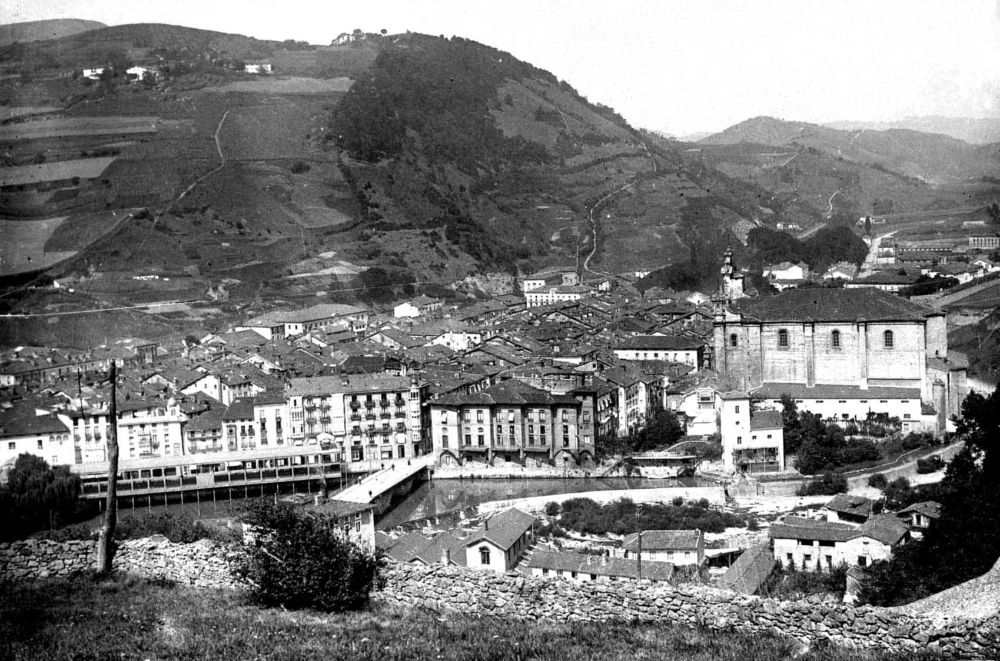

Our History
In the picturesque town of Tolosa, nestled in the heart of the Basque Country, a group of visionary engineers and craftsmen came together in the early 1980s to establish Tolosaldea LH Machinery. The founders, inspired by a shared passion for precision engineering and cutting-edge technology, set out to revolutionize the world of CNC printing.
The company's journey began with a modest workshop, where the founders painstakingly crafted their first CNC printing machines by hand. Drawing inspiration from the rich cultural heritage of Tolosa, known for its strong traditions in craftsmanship, they named their venture "Tolosaldea LH Machinery," with "LH" symbolizing "Lan Handia" (Great Work) in the Basque language.
As the years passed, Tolosaldea LH Machinery gained a reputation for producing CNC printing solutions that were not only technologically advanced but also reflected the artisanal spirit of Tolosa. The company's commitment to quality and innovation quickly attracted attention on the international stage.
In the 1990s, Tolosaldea LH Machinery introduced its groundbreaking "EuskalTek" series, a line of CNC printers that seamlessly blended precision engineering with user-friendly interfaces. This innovation propelled the company into the forefront of the global CNC printing industry.
By the early 2000s, Tolosaldea LH Machinery had expanded its operations, establishing a state-of-the-art manufacturing facility in Tolosa. The company became a hub for technological innovation, attracting top engineers and designers from around the world.
Throughout the following decades, Tolosaldea LH Machinery continued to push the boundaries of CNC printing technology. The company's commitment to sustainability and eco-friendly practices earned it accolades and recognition as an industry leader in responsible manufacturing.
In the present day, Tolosaldea LH Machinery stands as a symbol of Tolosa's marriage of tradition and technology. The company's CNC printing solutions are renowned globally for their precision, reliability, and the touch of craftsmanship that harks back to the town's proud heritage.
Tolosaldea LH Machinery remains deeply rooted in Tolosa, contributing not only to the local economy but also to the town's identity as a hub of innovation. The company's success has become an integral part of Tolosa's story, weaving a narrative that connects the past, present, and future of this charming Basque town..
